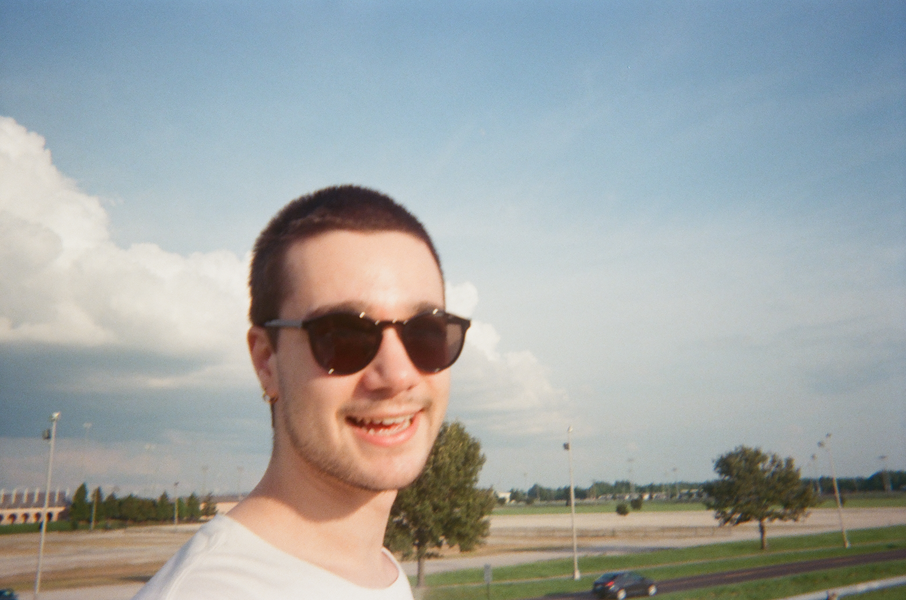

Will Decker
I’m a Psychology PhD student in the Language, Intelligence and Thought Lab at Georgia Tech. I’m interested in how humans (and sometimes machines) learn, organize, and use knowledge of the world.

I’m a Psychology PhD student in the Language, Intelligence and Thought Lab at Georgia Tech. I’m interested in how humans (and sometimes machines) learn, organize, and use knowledge of the world.
